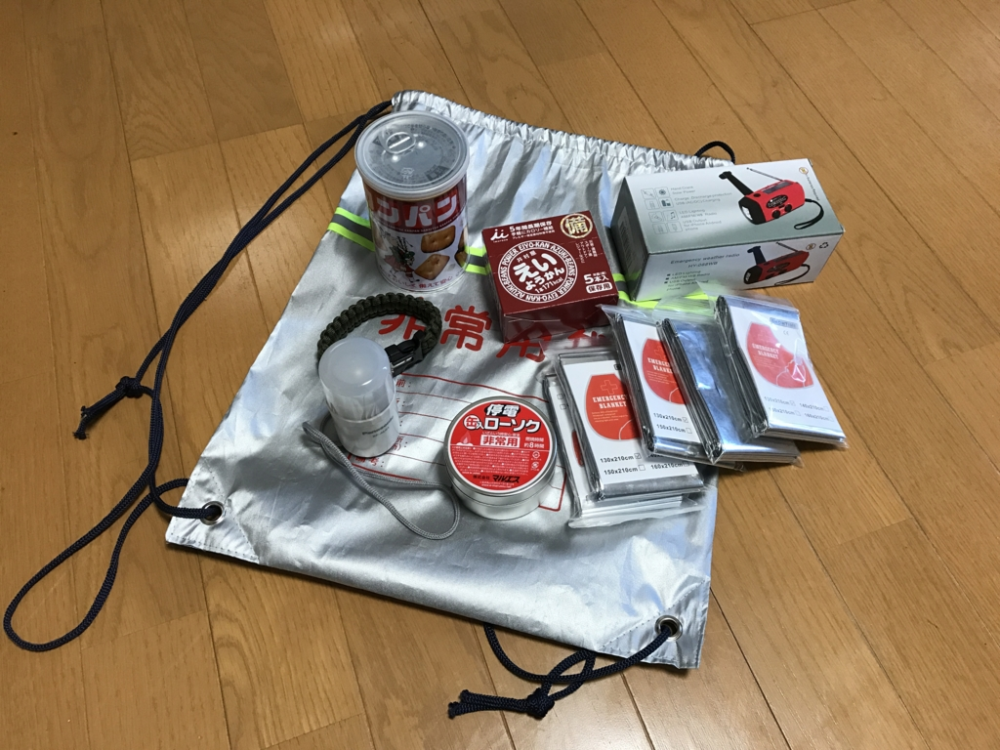
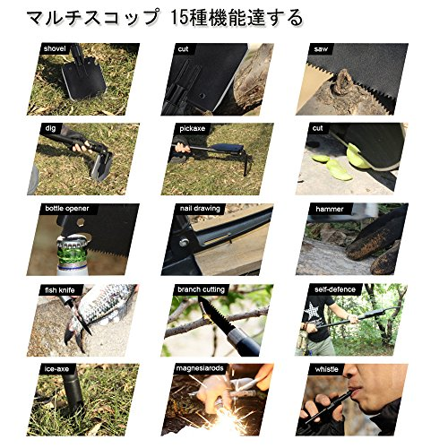
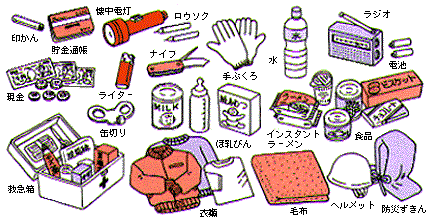
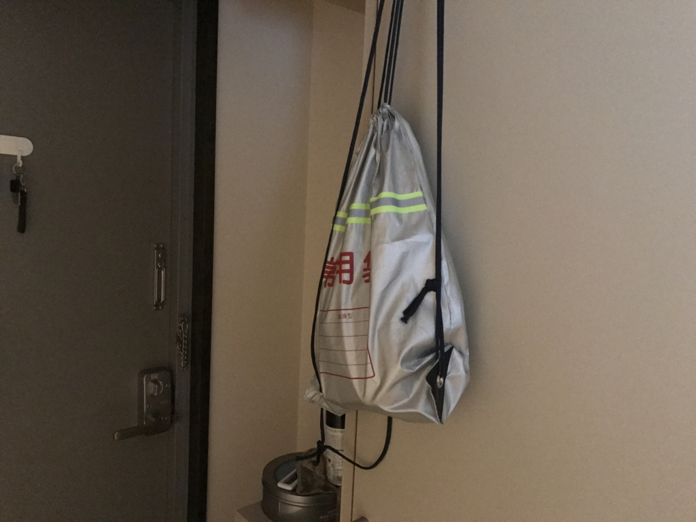

3月11日なので非常持ち出し袋の中身を点検してみる
公開日：

天気がいいから出かけようと思ったらバイクのバッテリーが上がってた……ので、3月11日だし、非常持ち出し袋の中身を点検してみた。
コンセプト
なんでもそうだが、すべての状況に対応できる非常持ち出し袋なんてありえないし、あったとしてもすごく高価なものになると思う。なので、まずコンセプトを絞るべき。
自分は無職・引きこもり・マンションの最上階生活なので、
- 「周りが大変なことになって部屋から出られない。当然ライフラインは全部止まっている。自室で数日間救助を待つ」
- 「最低限のモノをもって近所に避難する羽目になった」
場合などを想定してみた。キャンプに使うアウトドア用具はもっているので（長期非難を強いられるならこっちを出せばよい）、非常袋の内容は最低限のモノにしたい。
食べ物

- 出版社/メーカー: 井村屋製菓
- メディア: 食品&飲料
- 購入: 57人 クリック: 167回
- この商品を含むブログ (20件) を見る

- 出版社/メーカー: ミドリ安全
- メディア: その他
- 購入: 3人 クリック: 3回
- この商品を含むブログ (3件) を見る
とりあえずこの2つが入ってた。まだぜんぜん持つので、来年にでも食べようと思った。
部屋にはほかにもいろんな保存食があるし、基本的に困ることはないと思う。インスタント食品は……キャンプ用のランタンで作れるよね。
一方、飲み物が入ってなかったのはダメかも。うちにはほぼ常時、ペットボトル飲料が常備してあるので要らないといえば要らないが、パニクって非常袋を持ち出したはいいが水がない、なんていう状況にならないとも限らぬ。数年もつ感じのやつを入れておこう（普通のミネラルウォーターでいいのか？）。
灯り

パナソニック LEDランタン 乾電池付き ホワイト BF-AL01K-W
- 出版社/メーカー: パナソニック(Panasonic)
- 発売日: 2011/06/21
- メディア: ホーム&キッチン
- 購入: 1人 クリック: 1回
- この商品を含むブログを見る

- 出版社/メーカー: マルエス
- メディア: ヘルスケア&ケア用品
- この商品を含むブログを見る
灯りをつけていないと寝られない体質なせいか（別に寝ようと思えば寝られるけど、なんとなくつけっぱなしが安心）、やけに灯りが充実していた。
LED ランタンの電源は単三乾電池3本で、予備は用意していないようだが、エネループを常に10本ぐらい充電している*1ので困ることはなさそう。
乾電池が尽きた時のためにロウソクも用意しているのは杞憂というか用意周到だけど、次の装備がイケていなかった。

GIWOX サバイバルブレスレット 多機能ブレスレット ファイヤースターター 火打石 ホイッスル スクレーパー 安全対策 登山 旅行 防災 救命縄 バックル（彩/緑）
- 出版社/メーカー: GIWOX
- メディア: その他
- この商品を含むブログを見る
火打石付きのブレスレット。試しに火をつけようとしてみたが、うまくいかん。用意した時はこれで万全だぜ（ぐへへへ）と思っていたらしいが、とんだおバカさんだと思う。タバコ吸わないからライラ―をもっていないんだが、そういう系のモノを用意しておくべきだろう。
追記
このブレスレットは方位磁石と笛がついていて、バラせば紐としても使えるのでそんなに悪いものではない。あと、紐はバイクにも荷掛け用を装備しているので、そっちからとってくるのもアリか。
防寒
5枚パック")
- 出版社/メーカー: 三ツ星通商
- メディア: その他
- この商品を含むブログを見る
あって困らないだろうサバイバルシートが何枚か。安いしね。実際に役に立つのかは不明だけど。部屋なら寝袋も毛布もあるわけで、優先度は高くない。
医療品
ゼロ。ちなみに部屋にも薬の類はない（絆創膏すらない！）。基本的にケガや病気をしない（しても自己流で治す）ので、そういう装備を軽視しているようだ。
でも、避難途中でケガをした若いお姉ちゃんの介抱をするチャンス、じゃない、機会があるかもしれんし、なんかしら用意しておくべきやな。
ラジオと発電装備

今回の装備で一番高いもの（2,000円ちょい）。動かしてみたけど、ちゃんとラジオも発電もできた。ケーブルがミニ USB のみだったので、短い Lightning ケーブルを補充。
いざというときはやっぱりラジオ（と Twitter）な感じなので、ラジオと電源は欲しいよねぇ。テレビは……災害時のためのモノもあるみたいだけど、まぁ、いいかな。
そのほか
防災ヘルメットなんかはバイクのジェットヘルメットでええやろ。トイレ？ おっさんは野グソや！ あ、でもトイレットペーパー的なものは入れておくべきだな。キッチンペーパーひと巻きいれておこう。あと、簡易スコップなんかもあるといいかも。軍用のいろんなことに使えるヤツ、ほしい。

（あれ？ だんだんコンセプトから外れてきたぞ）
何かと役立つ軍手も必須。土方やってた頃はデカい段ボール単位で備蓄があったんだけど、よく考えたら今の自分の家には一枚もなかった。タオルなんかも入れておくといいのかもな。
あと裁縫道具なんかも役に立つと聞くけど、そんなこと言いだしたらきりがない気がしてきたので、これぐらいにしておこうかと思う。カミさまと戦うためにチェーンソーとか言い出しかねん。
追記

総務庁消防庁のおすすめはこれだけど、正直こんなに用意してられんと思った。でも、ナイフは割と役に立つかも。追加したい。
今回の反省はこれぐらい。まぁ、愛媛県は災害の少ない土地だけど、地震はそれなりに多いからね。ちゃんと備えて、たまには見直しましょうってことで。今回紹介したのを全部入れても5,000円かからないんじゃないかな？ 一度作ればあとはたまに消費して補充すればいいだけだしね。
他にもこんなのあるでっていうのあったら教えてください。
追伸

ちなみにこれらの装備の中で一番安いのはダイソーで買った“非常用持ち出し袋”だったりする。まぁ、長期非難が確定すれば、押し入れから登山リュックでも出せばいいわけで、大げさなものは要らない。
*1:割といろいろなことに使っている。Bluetooth 機器など